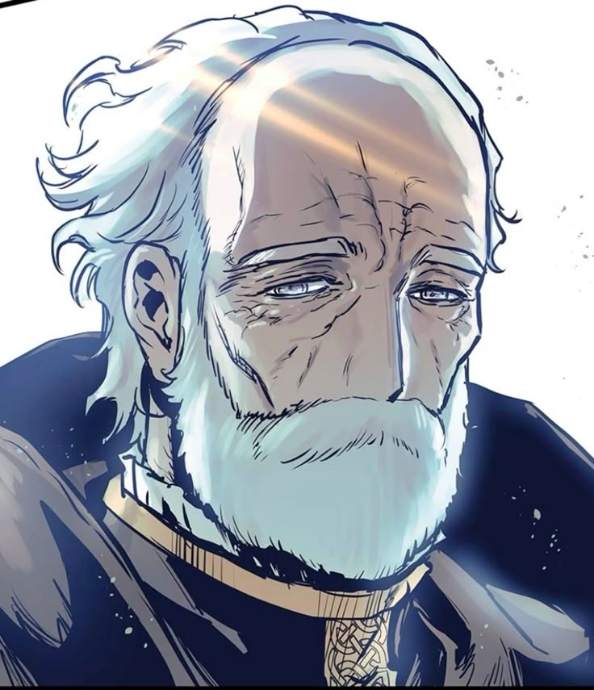

| Raizan Tenrai Moto | The Doom Breaker Moto, Tenrai line as of the present reckoning, eleven years after the corridor |
| Epithet | The Doom Breaker. The lords believe it and wear collars. In the Tenrai house he is the Old Hawk, in the old court tongue Unmei-kudaki, and to Kharven soldiers “the gray thread” |
| Concept | He only moves when you are not looking, and he knows the morning you die. |
| Stat line | Stage IX Invocation · Master (Fire) Level 276 · Refined · Mitodoke (見届け), He Who Makes Sure Spirit IX Mastered, III · Fate VIII Walked 30%, II · Body Studied 20%, I · Lenses: home + 2 |
| Combat grammar | Blade |
| Aura and sound | color: Tenebra at Invocation’s clarity, a bright black-violet so faint at rest that it reads as the shadow of something else, with Oneirion’s dream-lavender at its edges when he reads texture: matte, drinking the light that reaches it shape: none of its own; it lies along him like a second shadow signature sound: none, which is the sound people remember feel: cold and unlit, no smell at all, a light-headed quiet; the lamps seem to burn lower, the shadows near him deepen, dogs do not bark, and when he reads there is a trace of night-jasmine nobody can place |
| How he moves | He sits or stands a little stooped, hands quiet, the right heel carried off the floor, and he squares up to no one. |
| Stack | sustainable 550 in Finesse, Forecast, Feint and Perception, the Stage roof cap two steps on the hidden scale over the sustainable figure (to 950 on those four) layers: KAMIKAKUSHI or HITSUZEN when called |
| Bonded weapon | the Last Thread, a needle-blade |
| Kit | a high-collared navy-black coat banded in dull gold that everyone takes for a physician’s, a long gold knotwork clasp at the throat, a black lacquer cigarette tin, a traveling go board, and the piece people talk about first and almost nobody has seen: the Last Thread, a Legendary needle-blade in his left sleeve, the reason every lord in the north wears a collar |
| Voice | ”You were always going to die this morning, my lord. I have only come to make sure of it.” speaker type: a retired court physician delivering a diagnosis he has delivered many times before |
| Next gate | Stage X, Realization Catalyst: his Domain achieving Continuum accommodation holds at Level 230, which his 276 already passes: only the Catalyst is wanting, and past Level 300 without it he would come into Residual Strain |
I. Identity
| Field | Value |
|---|---|
| Full Name | Raizan Tenrai Moto |
| Pronunciation | RYE-zahn ten-RYE MOH-toh |
| Alias / Title | The Doom Breaker |
Also Known As
| Name | Who says it |
|---|---|
| the Old Hawk | the Tenrai house |
| Unmei-kudaki, Doom-Breaker | the old court tongue |
| ”the gray thread” | Kharven soldiers, who say you only see him in the corner of your eye |
| DOOM-BREAKING, for THE ONE STRAND | the house and the Hall, who still call it that |
| Field | Value |
|---|---|
| Race / Lineage | Human, Archaic Bloodline, Moto, the Tenrai line |
| Age | About three hundred and thirty-two: nineteen at the back of the Hall the morning of the Kurenai verdict, 313 years ago. He looks and moves like a man of seventy-seven, and that is the age the north takes him for |
| Realm / Faction | The Tenrai line of the Moto |
| School and sect rank | Tenrai war-schools · elder; no student has been allowed past the last form |
Renown
| Among | What they say of him |
|---|---|
| the public | a name told to children and lords alike, and believed by the lords |
| the army | no commander in the north sleeps without a guard at his door and a collar on his neck |
| the sects | the most feared assassin in the kingdom, in his youth and still |
| the guilds | the Arbitration Division’s file on him is very long and has no conviction in it |
| epithet | the Doom Breaker |
| Field | Value |
|---|---|
| Catalyst Event | The first doom he broke: a man the Tengan said could not die that year |
| Refusal | He will not kill a man he has not first watched and read; he does not do the work blind, for any price |
| Conviction | Every man carries the shape of his death on him already; mercy is making it quick and clean |
| Arc kind | Flat, and nearing its end |
II. Soul Architecture
| Field | Value |
|---|---|
| Level | 276; it holds Invocation (215) and would hold Realization (230), and no Residual Strain builds in him short of 300 |
| Temperance Stage | IX, Invocation · Master |
| Path | Spirit IX Mastered · Fate VIII Walked 30% · Body Studied 20%. Spirit opens his reading and his concealment; Fate opens Dominion Fate and the reach of his doom-sight; Body keeps the hand and the feet honest. Fate is the Path behind, and it shows in how little he can pull: one small lean on the odds, set beforehand. |
| Mastery | Spirit III, Confessor: the lead, read from Level under Invocation’s ceiling, on which his reading, his hush and his Domain’s upkeep are paid · Fate II, Drawn: Tenrai blood and fifty years of tipping small chances, with no Work behind it, and blood without a Work is no grip, so his Fate stops at II · Body I, Muridic: Studied, two rungs behind the lead, which is all one thrust needs |
| Yield (η) | 0.96 through the Core, his own figure and far above what a hall expects of a Master. Whatever a working loses shows on its worker, and he has spent fifty years teaching his Crystal to lose almost nothing: what little falls short is paid in his Core as hollowing, never as heat, noise or light |
| Lenses | home Tenebra + 2 held (Oneirion, Ignivale), the Master’s count |
| Soul Crystal | Fire |
| Crystal State | Refined, and narrowing: the Tengan shows him his own futures fewer every year |
| Class | 見届け Mitodoke, He Who Makes Sure; a class of one gives: the skill Watching, and the Long Minute, by which his eyes neither dry nor blink while he watches one person shapes: his points fall to the eye and the hand, and almost none to the body evolved from: 見張り Mihari, Lookout, the common class of the Tenrai war-schools, offered back changed after the counting-house and evolving with his Spirit Mastery since |
III. Wellspring Harmonizations
| Wellspring | Folk name | Kind | Depth | Got from | What it bends in him | Note |
|---|---|---|---|---|---|---|
| Tenebra | the Hidden Shadow | Wild | deep | — | the hidden shadow: he is parted from the world’s notice and kept quieter than anything looking for him, which the Measurewrights put as his return falling below their noise floor | hiding is always from someone, and a soul hides only from what it has thought of; he is quieter than the room he stands in, until he is seen from the one angle he did not plan for |
| Oneirion | the Dream | Spirit | held | — | dream as a place: a man’s possible ways laid out in the space of what can be thought, where no soul has an address in a room | the Tenrai doom-sight works in that space, and so does the Doom Breaker’s hand; the Measurewrights call it configuration space |
| Ignivale | the Spark | Wild | held | — | the spark: the gap between wanting and doing closed to the quickness of his nerves | his strike arrives before the target has finished seeing it begin |
IV. Primary Stats
| Primary | Total | Mean |
|---|---|---|
| Vitality | 200 | 25 |
| Ardency | 900 | 112.5 |
| Gnosis | 2,300 | 287.5 |
| Dexterity | 3,000 | 375 |
| Harmonics | 900 | 112.5 |
| Resilience | 300 | 37.5 |
| Tempering | 318 | 39.75 |
| Dominion (seven, Throne apart) | 650 | 92.9 |
| Throne | not opened | · |
| Pool | 8,568 | |
| Unspent | 0 |
V. Sub-Stats
| Primary | ||||||||
|---|---|---|---|---|---|---|---|---|
| Vitality | Fortitude 20 | Absorption 10 | Constitution 30 | Hemostasis 40 | Regeneration 10 | Filtration 40 | Tolerance 20 | Threshold 30 |
| Ardency | Flux 120 | Alacrity 200 | Depth 60 | Penetration 450 | Compression 70 | Cascade 0 | Overchannel 0 | Density 0 |
| Gnosis | Perception 550 | Acuity 450 | Forecast 550 | Fluency 100 | Retention 200 | Analysis 250 | Cognition 150 | Vigilance 50 |
| Dexterity | Celerity 400 | Reflex 520 | Finesse 550 | Economy 450 | Evasion 400 | Grapple 120 | Feint 550 | Sequence 10 |
| Harmonics | Attunement 100 | Projection 0 | Breadth 50 | Stability 200 | Empathy 100 | Synergy 0 | Axis 0 | Suppression 450 |
| Resilience | Integrity 80 | Ward 100 | Persistence 40 | Anchoring 30 | Fortification 10 | Hardening 10 | Oath 30 | Continuity 0 |
| Tempering | Clarity 200 | Overflow 0 | Maturity 80 | Coherence 30 | Yield 0 | Ceiling 0 | Capacity 0 | Longevity 8 |
| Dominion | Radius 20 | Sovereignty 30 | Sense 300 | Gravity 0 | Pressure 50 | Command 0 | Fate 250 | Throne not opened |
| Note | Finesse, Forecast, Feint and Perception at 550, the Stage roof, Reflex and Penetration behind them: a hand and an eye. Vitality 200 and Resilience 300 are an old man’s body and the price of fifty years spent elsewhere; one honest blow would kill him, and in fifty years nobody has landed it. |
VI. Force of Hand
| Measure | Figure | Feat | Carried by | Note |
|---|---|---|---|---|
| Strike Force | Penetration 450 | on a point the width of a needle | Penetration 450 | the Measurewrights say the energy is small and the pressure enormous |
| Lifting | Constitution 30 | he is seventy-seven | Fortitude 20, Constitution 30 | |
| Travel speed | Celerity 400 | Mach 5 to 25 in a burst, and never seen at it | Celerity 400 | |
| Reaction | Reflex 520 | 0.05 to 0.2 ms | Reflex 520 | |
| Durability | Fortitude 20 | he survives by not being hit | Fortitude 20 |
VII. Aether Flow
| Measure | Figure | Note |
|---|---|---|
| EU Reserve | 9,042,000 EU | |
| Flux Density | 150,000 EU/g | |
| AU/s | 144,000 | |
| Lost share at full output | paid in his Core as hollowing, and almost nothing of it shows; the Measurewrights reckon it at 5.8 GW | |
| From full | empties in 1 minute 3 seconds at full output, Starvation at 57 seconds | he has never once needed more than three of those seconds |
| Recovery | ten percent a minute at rest | and he rests a great deal, watching |
VIII. Traits
Full accounts: Raizan Tenrai Moto — Abilities
Every Trait reads at his lead Mastery, Spirit III.
| Trait | Kind | Source | Path and Form | Gates | What it does | Limit | Tell | Cost | Counter | Numbers |
|---|---|---|---|---|---|---|---|---|---|---|
| BETWEEN BLINKS (瞬き · Mabataki) | Primary | — | Path Spirit, with a Studied Body’s feet · Lens Tenebra, under the Tengan’s timing · Form Read | none on the card | Nobody sees him cross a room, because he crosses it in the gaps when your eyes jump. A whole room blinking together is the warning. | The number of eyes: one man’s gaps are many, three men’s gaps overlap less, and in a crowded hall the moments when every eye in the room is blind at once are rare, short and far apart. It does nothing against a sense that does not blink: a beastkin’s nose, a hound’s ears, a blind fighter’s hearing. | For anyone who knows it, a whole room blinking at once. | Constant and nearly costless, about half a percent of his reserve a minute while he is crossing ground, about 45,200 EU a minute. | Many eyes, or none. The crowd or the dark: surround the target with watchers who look in different directions, or put the guard out of the light and let him listen. | — |
| THE ONE STRAND (運命割り · Unmei-wari) | Secondary | — | Path Spirit for the read, with the Walked Fate Path’s small share behind it · Lens Oneirion · Form Read | Dominion Fate, which his Fate Path opened | One full minute of watching you, without blinking, and he finds the single moment when every way you could live thins out at once. | It needs the minute of watching, close enough to read, and he will not work without it. It cannot find the death-strand in a man whose futures are truly open, a man in the middle of a real choice, nor read a doom that a stronger fate-sight is already holding; a Kōkan Kamigan ranks above a Tenrai Tengan, and under that eye his reading blurs. | he watches a man for a full minute, without blinking himself | About 8% of his reserve, some 723,000 EU, and something he cannot get back: every doom he breaks, the Tengan shows him his own last morning a little closer, as if a year of his own futures went into the gap with the other man’s. | Be unpredictable, stand beside someone whose eye is stronger, or never give him the minute. | — |
| TENGAN | Inherited | — | The Tenrai branch of the Moto heart-eye · no lens · Form Read · it spends his own share and pulls nothing down | — | the near-future paths of bodies and blades as lines of light that lean the way things are likely to go | Likelihood: it shows him what will probably happen, and anything genuinely improbable surprises him like anyone else. | spokes in the iris | Nothing to keep open, and it is always open, so he has not slept a full night since he was twenty. | A ward that returns or blurs a reading, Oblivara’s or a Tenebra veil of one’s own, or the plain unlikely act. | — |
| HUSH (静寂 · Shijima) | Passive | — | Path Spirit, the hush laid over what he is, with a Studied Body’s small share for footfall and scent · Lens Tenebra · Form Write | none on the card | Dogs do not bark at him and horses do not shy; he is quieter than the room he stands in. keeps him quieter than the room around him | Tenebra’s own failure: it is shaped against the angles he expects, and from the one he did not plan for he is as bright as anyone, brighter, a figure suddenly sharp in the corner of a mirror or the eye of a second watcher behind the first. | dogs do not bark | Nothing, and it is always on. | The one angle he did not plan for. | — |
IX. Skills and Abilities
Full accounts: Raizan Tenrai Moto — Abilities
Skills
| Skill | Cues / mechanics | Learned where | Priced by (Sub-Stats) | Rank | Mark |
|---|---|---|---|---|---|
| Watching | a full minute, still, unblinking; breath, gait, which hand, which guard looks at which door | the Tenrai war-schools | Perception, Forecast, Vigilance | Master | Mastered |
| Needlework | the nape, the gap, the angle up; the point kept true through ring, hide and bone; one movement | the Tenrai war-schools, and fifty years of contracts | Finesse, Penetration | Master | Mastered |
| Stillness | three days in a rafter; the breath held; being furniture, being nobody | the Tenrai war-schools | Suppression, Economy | Master | Mastered |
| Stone-flicking | a go stone off the thumb to a cheekbone at ten paces, without the arm moving | his father’s board, and one morning at Kessen | Finesse, Acuity | Expert | Held |
| Court manners | the old forms, the bow by degree, how to stand in a lord’s hall and be furniture | the Tenrai house | Feint, Empathy | Expert | Mastered |
| Go | patience, the long ladder, the sacrifice that wins the corner | his father’s board | Forecast, Analysis | Expert | Mastered |
| Anatomy | where breath and heart are kept, what a physician will find and what he will miss | the Tenrai stillrooms | Analysis, Retention | Adept | Mastered |
| Poisons | what kills slow, what kills quiet, what the tongue will not taste in plum wine | the Tenrai stillrooms | Analysis, Filtration | Adept | Mastered |
Techniques
| Technique | Kind | Mark | Source | Path and Form | Gates | What it does | Limit | Tell | Cost | Counter | Numbers |
|---|---|---|---|---|---|---|---|---|---|---|---|
| THE LAST THREAD | Signature art | — | — | — | — | he only moves when you are not looking, and he knows the morning you die | — | — | He has not slept a full night since he was twenty, and every doom he breaks brings his own last morning a year nearer. | Many eyes or none, a sense that does not blink, a stiff collar at the nape, standing still, owning nothing loose; deny him the minute and he will not work at all. | Sound: none |
| ONE NEEDLE (一本針 · Ippon-bari) | Signature Technique | Mastered | Lived · page: ONE NEEDLE | Path Body, Studied: one honest thrust, aimed by the Spirit read · Lens Ignivale · Form Strike | none on the card | One thrust the length of a hand, up where the skull meets the neck. He does not raise his voice for it. His breath stops for three heartbeats first. | It needs the nape bare or soft; a stiff high collar of boiled leather, a mail gorget at the back of the neck, or a back to a wall denies it. The steel is the limit too: a point that fine holds almost no heat of its own, and pushed through air at forge heat it passes the color where its temper lives and goes soft, so that on bone a hair above the gap it goes in a thumb’s depth and curls. | His breath stops for three heartbeats before the thrust. | About 0.4% of his reserve, some 36,000 EU, almost all of it spent keeping the point perfectly true. | A stiff high collar or a mail gorget at the nape. Before, guard the nape; during, a turn of the head a finger’s breadth sends the needle off the gap and into bone, where it skids; after, he is an old man with an empty hand standing behind you, and he has never once been there long. | Sound: a soft puncture |
| FORCING STONE (利かし · Kikashi) | Technique | Held | Lived | No working in it: a thrown stone, aimed by the minute’s read · no lens · Form Strike, barely | none | A go stone flicked off your cheekbone, worth nothing, thrown because he has read that you will answer it; and where your answer goes, he already is not. | — | A hand going to the go stones. | No reserve at all. Its price is that every stone is a blow landed and every answer is a real one, thrown with everything the other fighter has at a body one honest blow would kill; and against a fighter who banks what he is dealt, each stone is a coin in the other man’s purse. | Owe a pebble nothing: a fighter free to ignore it stands still, and the old man is out of moves. | Sound: a small click of stone on bone |
| KINGSTEP OF THE WINNING THREAD (王歩 · Ōho) | School Art, Tenrai | Mastered | Taught · page: The Moto Bloodline | Path Spirit for the read, a Studied Body for the foot · no lens, the Tengan alone · Form Read | none on the card | The Tenrai walk: wherever you were about to step, his foot is already there. (Tenrai school art.) | It needs the other fighter to move: a blow, a rush, a step, anything with somewhere to go. | his steps land where your next step would have gone | Nothing beyond the open eye. | Standing still, which leaves nowhere to step to. | — |
| RUINOUS COINFALL (銭落とし · Zeni-otoshi) | School Art, Tenrai | Drilled | Taught · page: The Moto Bloodline | Path Fate, Walked · no lens stated · Form Pull, at Fate II | Dominion Fate | The lamp falls, the coin rolls, the latch slips, at the moment it matters most. (Tenrai school art.) | It moves nothing sound. | Small things falling in the room. | About half his reserve for a single lean, set beforehand, which is why he has used it rarely and why it never passed Drilled. | Own nothing loose. | — |
Vows
| Field | Value |
|---|---|
| Note | none in force |
Releases
| Release | Kind | Mark | Source | Path and Form | Gates | What it does | Limit | Tell | Cost | Counter | Numbers |
|---|---|---|---|---|---|---|---|---|---|---|---|
| ”Kamikakushi.” (神隠し, First Release, “the Vanishing”) | First Release | — | — | Path Spirit, the lead Path’s First · Lens Tenebra | — | One soft word, and his aura goes below sight. Even a second watcher sees nothing. Silent, it leaves his shadow behind for a heartbeat. | Everything the hush has is spent hiding the body, and nothing is left over the record: while the Release holds, a soul-reading eye at a finger’s distance reads his chest plainly, every killing in it. And it hides him from watchers, never from what he owes: a working tagged to his own soul finds him wherever he stands. | — | about 37,700 EU a second; 4 minutes from full | A hand laid flat on him breaks it. | folk name: the Vanishing |
| ”Hitsuzen.” (必然, Second Release and Domain, “Inevitability”) | Second Release | — | — | Path Spirit, the lead Path’s Second, colored by the Walked Fate road | — | Forty yards where the likeliest thing happens every time. No lucky dodge, no buckle that turns a blade, no miracle. opens and powers the Domain | — | — | — | — | Sound: none |
| HITSUZEN | Domain | — | — | Path Spirit, opened by the Second Release, its claim made on Fate because he walks Fate: a claim on conditions, authored in the Core · Lens Oneirion · Form Claim | Dominion Fate | forty yards where the likeliest thing happens every time | It serves him only while he is the likelier man. | — | It is blind to whose side the odds are on, and it makes a stronger enemy surer of winning, not less. About 75,000 EU a second; 2 minutes from a full reserve. | Be the likelier side outright, step out of the forty yards, or make one truly free choice inside it, an act no reading could have leaned toward, which the field cannot press because it has no weight to press. | forty yards · Sound: none |
X. Spirit Axes
| Field | Value |
|---|---|
| Note | None he will name. The Tengan shows him the threads between people; he has cut too many to keep any. |
XI. Resistances
| Against | Resistance | Carried by |
|---|---|---|
| Being read or found | very strong | Suppression and Tenebra |
| Blows of any kind | terrible; he survives by not being hit | Fortitude 20 |
| Poison | fair | Filtration 40 and a lifetime of small doses |
| Soul-work | poor | Ward 100 |
| Displacement | none | Continuity 0 |
XII. Physical Description
| Feature | Description |
|---|---|
| Age | He is an old man, and looks it, and that is the first thing anyone is meant to see. |
| Hair and beard | The crown of his head is bald and brown and shines in lamplight; what hair is left at the sides and back is white as fresh snow, long and loose and blown back from his temples as if he had been standing in a wind. |
| Face and eyes | His face is long and deeply lined, every line of it cut fine and deep, the brow creased in long furrows and the skin round the eyes folded into a hundred small creases. |
| Marks and scars | An old scar runs pale and thin from the left brow down across the cheekbone. |
| Build and hands | He is lean and a little stooped, with narrow shoulders and long thin hands, the knuckles swollen, the fingers still perfectly steady. |
| Clothing | He wears the Tenrai in its plainest form: a high-collared coat of deep navy-black, close at the throat, the collar banded in dull gold; a thin gold edge down the front; at the throat, holding the collar closed, a clasp of gold Kharven knotwork, the one northern thing on him, from a marriage fifty years buried. |
XIII. Psychology
| Field | Value |
|---|---|
| Core Wound | He was the best his line ever made, and his line used him for fifty years, and there is no one left alive who knew him before |
| Flaw | He has come to believe that a man’s death is already his, and that taking it is only tidying |
| Desire | To see his own last morning arrive and meet it watching |
| Strength | Patience past anything; he has waited in a rafter for three days |
| Loop | watch, read, wait, break, walk away |
| Foil | Godfrey Greymane and every guard like him: the man who stands at the door and does not move |
| Stress Default | slower, gentler, more courteous |
Voice block
| Field | Value |
|---|---|
| Speaker type | a retired court physician delivering a diagnosis he has delivered many times before |
| Chant tongue | the old court Japonic of the Moto; KAMIKAKUSHI called in it, softly |
| Lying tell | none anyone has found; when he lies he blinks, and he never blinks |
| Notices first | the nape of the neck, then the eyes, then the doors |
| Sentence length | short, courteous, complete |
| Contractions | never |
| Pet word | ”this morning” |
| Never says | ”I am sorry” |
| Stumbles | no |
| Stress shift | gentler |
| Grief shift | a long silence at a window |
| Joy shift | he plays a stone of go and smiles at the board |
| How modern | not at all; the old court forms |
| Sample line | ”You were always going to die this morning, my lord. I have only come to make sure of it.” |
XIV. Equipment
| Item | What it is | Grade | Rarity | Rung | Bonded |
|---|---|---|---|---|---|
| The Last Thread | needle-blade of gray Tenrai steel, the length of a hand, in a slim sheath sewn into the left sleeve | S | Legendary | Kingsarm | yes; it carries KAMIKAKUSHI’s hush, and multiplies no Primary, the card naming none for its bond |
| The knotwork clasp | gold, northern work, no working; a dead wife’s wedding gift | plain | Rare | — | — |
| A go board and stones | traveling set, slate and shell; no working | — | Uncommon | — | — |
| The coat | high-collared, deep navy-black wool, close at the throat; the collar banded in dull gold, a thin gold edge down the front; the Tenrai in its plainest form | plain | Rare | — | — |
| The servant’s gray | a plain gray house-coat and soft-soled shoes, whichever a house’s own servants wear | plain | Common | — | — |
| The cigarette tin and the ash dish | a small tin in black lacquer with a gold crane on the lid, a dozen thin paper-rolled cigarettes and a fold of waxed matches inside; a little bronze dish that stays by the board | plain | Uncommon | — | — |
| Item | Item Tier | Look | Wear and repairs | How he shows it off | What people say | Other |
|---|---|---|---|---|---|---|
| The Last Thread | Item Tier Storied | unpolished gray steel with no edge at all, ground and reground until it is finer than any needle a surgeon would trust and shorter than it began; a grip of gray cord no thicker than a quill; the sheath stitched in behind the left cuff, felt-lined so that it says nothing | — | he never has, and the north shows it off for him; there are collar-makers in three cities who owe their houses to this needle, and a boiled-leather collar with a Kessen maker’s mark runs two gold | that it was handed to him at nineteen with a name and a night, which is true; the chair that issued it has never said whose it was before; soldiers swear it has killed a thousand, and he has never corrected a number | mass / balance: a few grams, balanced at the fingertips · proof-mark a single Tenrai hawk cut where the needle meets the grip beats mail rings, leather and bone at the point, and any plate with a gap in it; fails against a stiff boiled-leather collar or a mail gorget at the nape |
| The knotwork clasp | — | a long narrow fall of interlaced gold, collar to breastbone, the high points worn soft where his thumb goes when he is reading someone | — | he doesn’t take it off | northern smiths can usually name a family from its knotwork, and three have looked at this one from across a room and gone quiet | the one bright thing on him and the one thing on him that is not Moto |
| A go board and stones | — | a hinged board of old kaya gone the color of tea, two bowls in black lacquer, one chipped at the lip | — | he sets it up in plain view and lets a house take him for a harmless old man playing against nobody | more than one lord has been found dead at his own board, and the north has gone off the game | — |
| The coat | — | Tenrai house tailoring, with a thin gray-brown wool mantle over the shoulders and no fur at all; the left sleeve cut a shade fuller to carry the sheath; the gold is thread, dull because he has never had it cleaned | elbows darned in the same navy by someone patient | the man who made the whole north wear a collar wears one too, and nobody has decided whether that is fashion or a joke | the old man in the physician’s coat, who comes at breakfast and is gone by the second cup | no boss, as the Tenrai wear none, and the only banner on him is a thumb’s length of gold hawk-heraldry worked inside the collar, against the nape, where nobody will ever see it |
| The servant’s gray | — | — | — | — | “the gray thread,” among Kharven soldiers, who say you only see him in the corner of your eye | he wore it first at nineteen at the back of the Hall of Verdicts; he owns no particular one and leaves none behind |
| The cigarette tin and the ash dish | — | the tin shuts tight enough to stay dry in a river | — | he lights one in front of a man and lets him think an old man is taking his time; it burns down in a little over a minute, which is what THE ONE STRAND needs, and the people who have worked out that it is a clock are mostly dead | — | — |
XV. Temperance Record
Level log
| Levels | Where they were earned |
|---|---|
| 276 | fifty years of contracts for the Tenrai, each Level slower than the last |
Stage ledger
| Stage | Name | Catalyst | Bought | The story in a line |
|---|---|---|---|---|
| I to VIII | — | — | — | the Tenrai war-schools, by the book, the Tengan opening in him at nine |
| IX | Invocation | the consolidation of his Domain | — | in a lord’s bedchamber, on a night the line has never recorded |
| Note | He climbed early and fast and then very slowly. The Tenrai found what he was at fourteen and made him that. He has stood at Invocation for thirty years; Realization would need the world to accommodate his law, and the law is inevitability, and he has come to think the world accommodates it already. |
XVI. Fracture Log
| Event | Layer | Status | What it left |
|---|---|---|---|
| The first doom | Attraction | processed | THE ONE STRAND |
| His own last morning | Core | open | a date he can see, coming closer |
Lore
Full account: Raizan Tenrai Moto — Lore
Ties
| Person | Who they are to him |
|---|---|
| The Tenrai line | his house, and his long employer; Kagenori sits its chair now, and the Old Hawk answers it. |
| Seiji Tenrai Moto | the young heir of the Tenrai design; Raizan taught him to bow, and nothing else. |
| His wife | a northern woman, dead of a fever fifty years ago; her clasp is at his throat. |